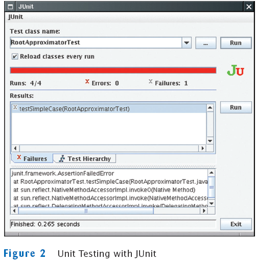
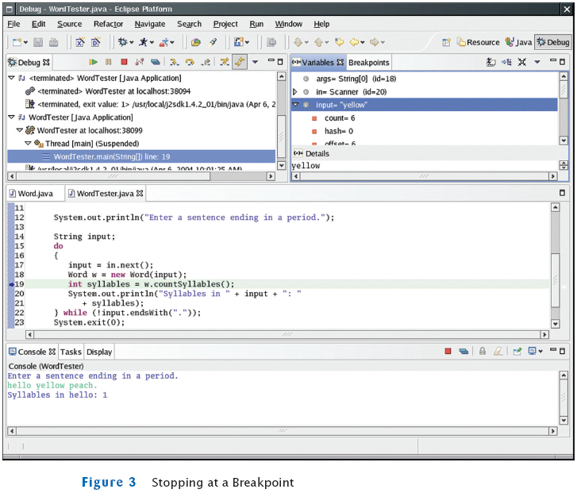
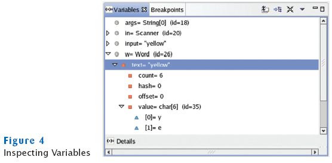
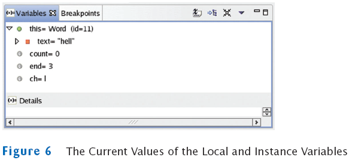
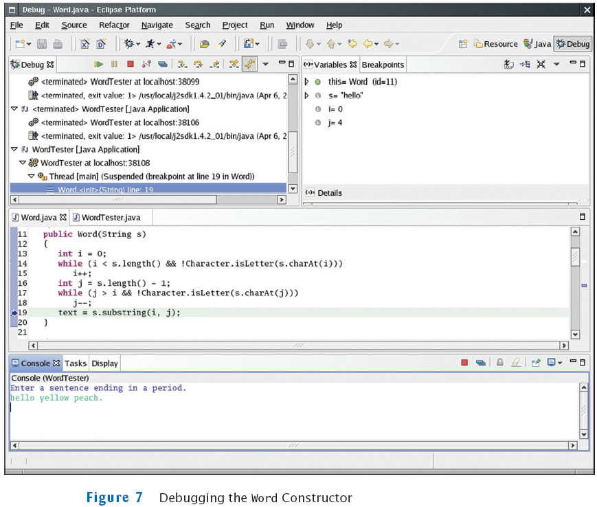
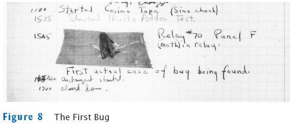
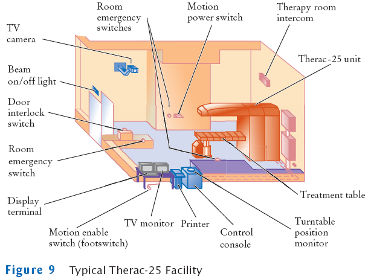

Chapter 10
Testing and Debugging
Chapter Goals
- To learn how to carry out unit tests
- To understand the principles of test case selection and evaluation
- To learn how to use logging
- To become familiar with using a debugger
- To learn strategies for effective debugging
Unit Tests
- The single most important testing tool
- Checks a single method or a set of cooperating methods
- You don't test the complete program that you are developing; you
test the classes in isolation
- For each test, you provide a simple class called a test
harness
- Test harness feeds parameters to the methods being tested
Example: Setting Up Test Harnesses
File RootApproximator.java
File Numeric.java
File RootApproximatorTester.java
Testing the Program
Self Check
- What is the advantage of unit testing?
- Why should a test harness be repeatable?
Answers
- It is easier to test methods and classes in isolation than it is
to understand failures in a complex program.
- It should be easy and painless to repeat a test after fixing a
bug.
Providing Test Input
- There are various mechanisms for providing test cases
- One mechanism is to hardwire test inputs into the test harness
- Simply execute the test harness whenever you fix a bug in the
class that is being tested
- Alternative: place inputs on a file instead
File RootApproximatorHarness1.java
Output
square root of 100.0 = 10.0
square root of 4.0 = 2.0
square root of 2.0 = 1.414213562373095
square root of 1.0 = 1.0
square root of 0.25 = 0.5
square root of 0.01 = 0.1
Providing Test Input
- You can also generate test cases automatically
- For few possible inputs, feasible to run through (representative)
number of them with a loop
File RootApproximatorHarness2.java
Output
square root of 1.0 = 1.0
square root of 1.5 = 1.224744871391589
square root of 2.0 = 1.414213562373095
. . .
square root of 9.0 = 3.0
square root of 9.5 = 3.0822070014844885
square root of 10.0 = 3.162277660168379
Providing Test Input
- Previous test restricted to small subset of values
- Alternative: random generation of test cases
File RootApproximatorHarness3.java
Output
square root of 810.4079626570873 = 28.467665212607223
square root of 480.50291114306344 = 21.9203766195534
square root of 643.5463246844379 = 25.36821485017103
square root of 506.5708496713842 = 22.507128863348704
square root of 539.6401504334708 = 23.230156057019308
square root of 795.0220214851004 = 28.196134867834285
. . .
Providing Test Input
- Selecting good test cases is an important skill for debugging
programs
- Test all features of the methods that you are testing
- Test typical test cases
100, 1/4, 0.01, 2, 10E12, for the SquareRootApproximator
- Test boundary test cases: test cases that are at the boundary of
acceptable inputs
0, for the SquareRootApproximator
- Programmers often make mistakes dealing with boundary conditions
Division by zero, extracting characters from empty strings, and
accessing null pointers
- Gather negative test cases: inputs that you expect program to
reject
Example: square root of -2. Test passes if harness terminates with
assertion failure (if assertion checking is enabled)
Reading Test Inputs from a File
File RootApproximatorHarness4.java
Reading Test Inputs from a File
- File test.in:
1 100
2 4
3 2
4 1
5 0.25
6 0.01
- Run the program:
java RootApproximatorHarness4 < test.in > test.out
- File test.out:
1 square root of 100.0 = 10.0
2 square root of 4.0 = 2.0
3 square root of 2.0 = 1.414213562373095
4 square root of 1.0 = 1.0
5 square root of 0.25 = 0.5
6 square root of 0.01 = 0.1
Self Check
- How can you repeat a unit test without having to retype
input values?
- Why is it important to test boundary cases?
Answers
- By putting the values in a file, or by generating them
programmatically.
- Programmers commonly make mistakes when dealing with boundary
conditions.
Test Case Evaluation
- How do you know whether the output is correct?
- Calculate correct values by hand
E.g., for a payroll program, compute taxes manually
- Supply test inputs for which you know the answer
E.g., square root of 4 is 2 and square root of 100 is 10
- Verify that the output values fulfill certain properties
E.g., square root squared = original value
- Use an Oracle: a slow but reliable method to compute a result for
testing purposes
E.g., use Math.pow to slower calculate x1/2
(equivalent to the square root of x)
File RootApproximatorHarness5.java
Output
Test passed: x = 913.6505141736327, root squared = 913.6505141736328
Test passed: x = 810.4959723987972, root squared = 810.4959723987972
Test passed: x = 503.84630929985883, root squared = 503.8463092998589
Test passed: x = 115.4885096006315, root squared = 115.48850960063153
Test passed: x = 384.973238438713, root squared = 384.973238438713
. . .
Pass: 100
Fail: 0
File RootApproximatorHarness6.java
Output
Test passed: square root = 718.3849112194539, oracle = 718.3849112194538
Test passed: square root = 641.2739466673618, oracle = 641.2739466673619
Test passed: square root = 896.3559528159169, oracle = 896.3559528159169
Test passed: square root = 591.4264541724909, oracle = 591.4264541724909
Test passed: square root = 721.029957736384, oracle = 721.029957736384
. . .
Pass: 100
Fail: 0
Self Check
- Your task is to test a class that computes sales taxes
for an Internet shopping site. Can you use an oracle?
- Your task is to test a method that computes the area of an
arbitrary polygon. Which polygons with known areas can you use as test
inputs?
Answers
- Probably not–there is no easily accessible but slow
mechanism to compute sales taxes. You will probably need to verify the
calculations by hand.
- There are well-known formulas for the areas of triangles,
rectangles, and regular n-gons.
Regression Testing
- Save test cases
- Use saved test cases in subsequent versions
- A test suite is a set of tests for repeated testing
- Cycling = bug that is fixed but reappears in later versions
- Regression testing: repeating previous tests to ensure that known
failures of prior versions do not appear in new versions
Test Coverage
- Black-box testing: test functionality without consideration of
internal structure of implementation
- White-box testing: take internal structure into account when
designing tests
- Test coverage: measure of how many parts of a program have been
tested
- Make sure that each part of your program is exercised at least
once by one test case
E.g., make sure to execute each branch in at least one test case
- Tip: write first test cases before program is written completely
→ gives insight into what program should do
- Modern programs can be challenging to test
- Graphical user interfaces (use of mouse)
- Network connections (delay and failures)
- There are tools to automate testing in this scenarios
- Basic principles of regression testing and complete coverage
still hold
Self Check
- Suppose you modified the code for a method. Why do you
want to repeat tests that already passed with the previous version of
the code?
- Suppose a customer of your program finds an error. What action
should you take beyond fixing the error?
Answers
- It is possible to introduce errors when modifying code.
- Add a test case to the test suite that verifies that the error is
fixed.
Unit Testing with JUnit
- http://junit.org
- Built into some IDEs like BlueJ and Eclipse
- Philosophy: whenever you implement a class, also make a companion
test class

Program Trace
Logging
Logging
- When tracing execution flow, the most important events are
entering and exiting a method
- At the beginning of a method, print out the parameters:
public TaxReturn(double anIncome, int aStatus)
{
Logger.global.info("Parameters: anIncome = " + anIncome
+ " aStatus = " + aStatus);
. . .
}
- At the end of a method, print out the return value:
public double getTax()
{
. . .
Logger.global.info("Return value = " + tax);
return tax;
}
Self Check
- Should logging be activated during testing or when a
program is used by its customers?
- Why is it better to send trace messages to Logger.global
than to System.out?
Answers
- Logging messages report on the internal workings of
your program–your customers
would not want to see them. They are intended for testing only.
- It is easy to deactivate Logger.global when you no
longer want to see the trace
messages, and to reactivate it when you need to see them again.
Using a Debugger
- Debugger = program to run your program and analyze its run-time
behavior
- A debugger lets you stop and restart your program, see contents
of variables, and step through it
- The larger your programs, the harder to debug them simply by
logging
- Debuggers can be part of your IDE (Eclipse, BlueJ) or separate
programs (JSwat)
- Three key concepts:
- Breakpoints
- Single-stepping
- Inspecting variables
The Debugger Stopping at a Breakpoint

Inspecting Variables

Debugging
- Execution is suspended whenever a breakpoint is reached
- In a debugger, a program runs at full speed until it reaches a
breakpoint
- When execution stops you can:
- Inspect variables
- Step through the program a line at a time
- Or, continue running the program at full speed until it
reaches the next breakpoint
- When program terminates, debugger stops as well
- Breakpoints stay active until you remove them
- Two variations of single-step command:
- Step Over: skips method calls
- Step Into: steps inside method calls
Single-step Example
- Current line:
String input = in.next();
Word w = new Word(input);
int syllables = w.countSyllables();
System.out.println("Syllables in " + input + ": " + syllables);
- When you step over method calls, you get to the next line:
String input = in.next();
Word w = new Word(input);
int syllables = w.countSyllables();
System.out.println("Syllables in " + input + ": " + syllables);
- However, if you step into method calls, you enter the first line
of the countSyllables method
public int countSyllables()
{
int count = 0;
int end = text.length() - 1;
. . .
}
Self Check
- In the debugger, you are reaching a call to System.out.println.
Should you step into the method or step over it?
- In the debugger, you are reaching the beginning of a long method
with a couple of loops inside. You want to find out the return value
that is computed at the end of the method. Should you set a breakpoint,
or should you step through the method?
Answers
- You should step over it because you are not interested
in debugging the internals
of the println method.
- You should set a breakpoint. Stepping through loops can be
tedious.
Sample Debugging Session
- Word class counts syllables in a word
- Each group of adjacent vowels (a, e, i, o, u, y) counts as one
syllable
- However, an e at the end of a word doesn't count as a syllable
- If algorithm gives count of 0, increment to 1
- Constructor removes non-letters at beginning and end
File Word.java
File WordTester.java
Debug the Program
More Problems Found

- end is set to 3, not 4
- text contains "hell", not "hello"
- No wonder countSyllables returns 1
- Culprit is elsewhere
- Can't go back in time
- Restart and set breakpoint in Word constructor
Debugging the Word Constructor
- Supply "hello" input again
- Break past the end of second loop in constructor
- Inspect i and j
- They are 0 and 4–makes sense since the input consists of letters
- Why is text set to "hell"?
- Off-by-one error: Second parameter of substring is the
first position not to include
- text = substring(i, j);
should be
text = substring(i, j + 1);
Debugging the Word Constructor

Another Error
Debugging countSyllables (again)
Fixing the Bug
Self Check
- What caused the first error that was found in this
debugging session?
- What caused the second error? How was it detected?
Answers
- The programmer misunderstood the second parameter of
the substring
method–it is the index of the first character not to be included in the
substring.
- The second error was caused by failing to reset insideVowelGroup
to false at the
end of a vowel group. It was detected by tracing through the loop and
noticing
that the loop didn't enter the conditional statement that increments
the vowel
count.
The First Bug

Therac-25 Facility
